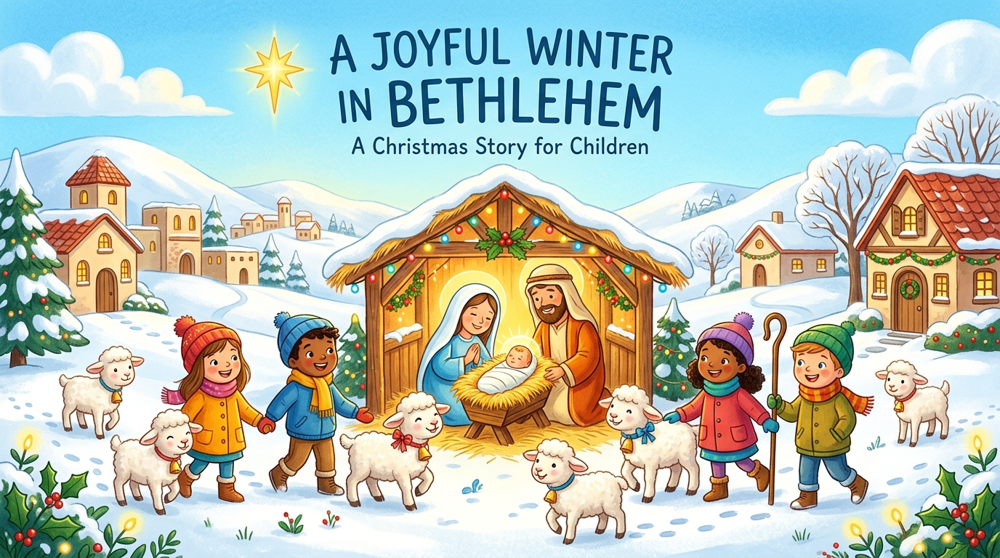

ÁNH SÁNG
ĐÃ ĐẾN
“Giáng Sinh không chỉ là một ngày lễ.
Đó là khoảnh khắc Thiên Chúa đến thật gần bên chúng ta.”
Chào đón các bạn nhỏ đến với hành trình tâm hồn tươi vui rực rỡ! Cùng thắp sáng những ngọn nến Mùa Vọng, bước theo ánh sao và dâng tặng Chúa Hài Đồng những món quà yêu thương nhất nhé!
HÀNH TRÌNH MÙA VỌNG
Bốn tuần Mùa Vọng là bốn bước chân dẫn lối chúng ta về hang đá Bêlem. Bé hãy bấm vào từng cây nến để thắp lên ngọn lửa sốt mến nhé!
TUẦN 1 – HY VỌNG
“Khi con đường phía trước còn mịt mờ, con hãy cứ hy vọng. Chúa luôn ở bên con.”
TUẦN 2 – ĐỨC TIN
“Đức tin là tin tưởng Chúa ngay cả khi chúng ta chưa nhìn thấy trọn vẹn con đường.”
TUẦN 3 – NIỀM VUI
“Niềm vui Giáng Sinh bắt đầu khi con nhận ra mình được Chúa yêu thương vô ngần.”
TUẦN 4 – HY VỌNG
“Hy vọng ngày Chúa giáng trần ngập tràn ánh sáng tình yêu và ơn cứu độ.”
DÕI THEO ÁNH SAO
Bốn tuần Mùa Vọng là bốn bước chân dẫn lối bé về hang đá Bêlem. Hoàn thành 3 nhiệm vụ mỗi tuần để Ánh Sao Bêlem bừng sáng rực rỡ!
Ngôi Sao Dẫn Đường Bêlem
Hoàn thành các nhiệm vụ từng tuần để giúp Ánh Sao tỏa sáng rạng ngời
Bé Đã Hoàn Thành Toàn Bộ 4 Tuần Mùa Vọng!
Ngôi Sao Bêlem đã sáng rực rỡ trên bầu trời, dẫn thẳng bé tới hang đá nơi Chúa Hài Đồng đang mỉm cười chờ đón con!
Khám Phá Hang Đá Bêlem →HANG ĐÁ BÊLEM TỎA SÁNG
Mỗi khi bé hoàn thành trọn vẹn các nhiệm vụ của một tuần, một mảnh ghép thiêng liêng sẽ bừng sáng! Hãy hoàn thành cả 4 tuần để toàn bộ bức tranh Chúa Hài Đồng rực sáng chan hòa!
“Hôm nay, Đấng Cứu Độ đã sinh ra cho anh em,
Người là Đấng Kitô, là Đức Chúa.”
(Tin Mừng theo Thánh Luca 2, 11)
NÀO TA HÃY ĐẾN
BÁI THỜ NGƯỜI.
“Nguyện xin ánh sáng Chúa Kitô chiếu soi trong tâm hồn con.”
“Nguyện xin Người ban cho con đức tin khi bối rối, niềm hy vọng khi mệt mỏi, bình an khi âu lo, và tình yêu để con sẻ chia cùng tất cả mọi người.”